Longform, reels, podcast hooks and short films, cut for brands and creators.
Hi. Pull up a chair, I’ll show you what I’ve been editing.
Hi, I’m Sumedh.
I’m a video editor with 4+ years of experience. I like clean, modern visuals that blend creativity with tech.
Based in Pune, I help brands and creators stand out with engaging edits and motion graphics. Cricket teams, podcasts, athletes, short films: if it needs a rhythm, I’ll find it.
What I cut
Worked with
Selected edits
- Our backbone, our spin unit, Longform, 1:30
- Hardik Pandya, Reels & Shorts, 0:39
- Dostcast Intro, Podcast hooks, 0:58
- Lewis Hamilton reel, Reels & Shorts, 0:23
- Flight (short film), Short films, 22:26
- WhyFal Intro, Podcast hooks, 1:31
- Papi (short film teaser), Short films, 1:13
The bin
Every edit I’ve published. Pick one and it plays right here.
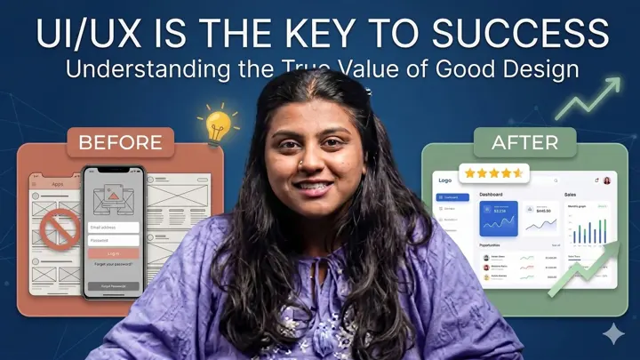
1:11UI/UX ImportanceLongform · Sumedh Kant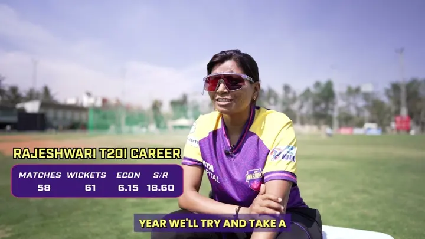
1:30Our backbone, our spin unitLongform · UP Warriorz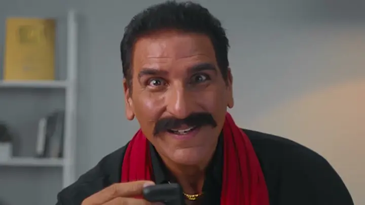
1:15Audience shocked, Deadpool and Bulla rockedLongform · boAt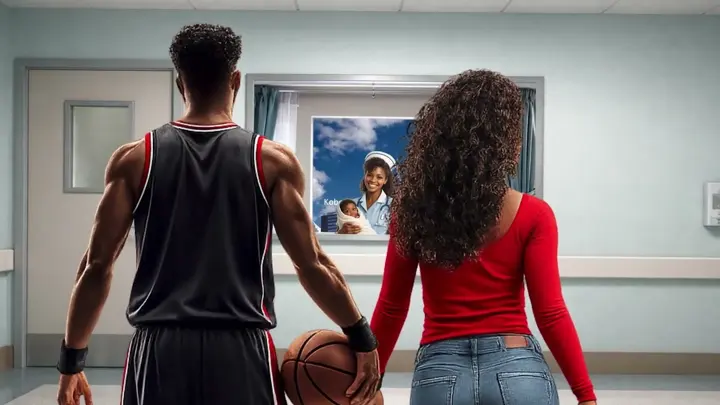
0:20Kobe BryantLongform · Sumedh Kant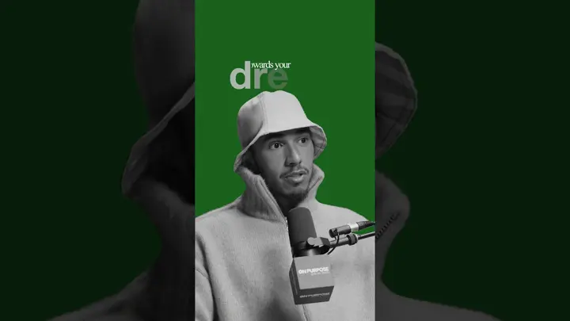
0:23Lewis Hamilton reelReels & Shorts · Sumedh Kant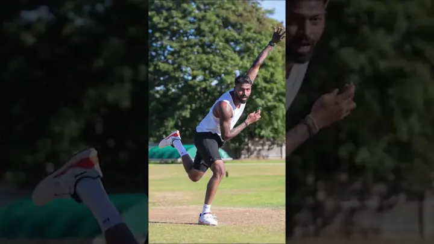
0:39Hardik PandyaReels & Shorts · Sumedh Kant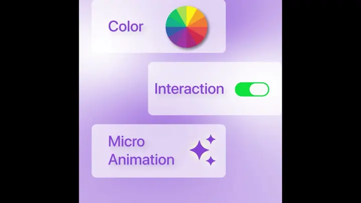
0:45Why UI/UX is importantReels & Shorts · Sumedh Kant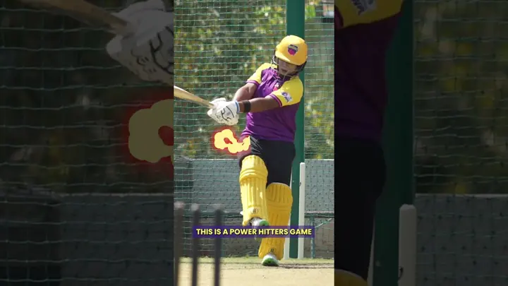
0:28Chamari reelReels & Shorts · Sumedh Kant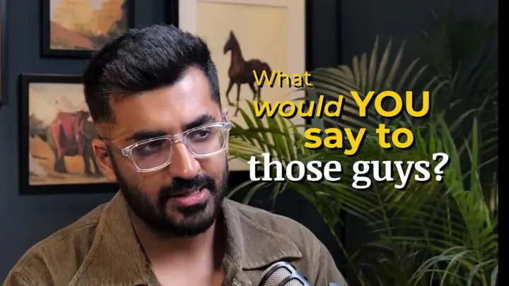
0:58Dostcast IntroPodcast hooks · Sumedh Kant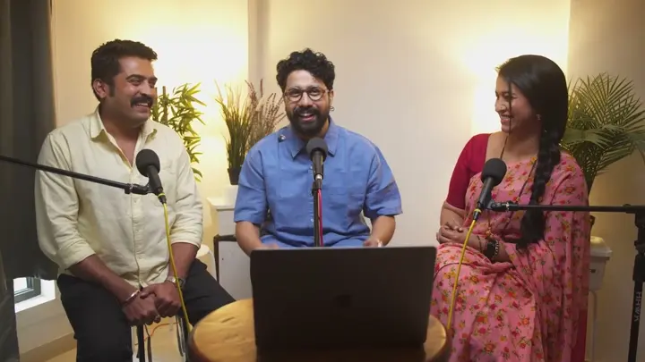
1:31WhyFal IntroPodcast hooks · Sumedh Kant- 1:00:53How to Build a Second Income | Ajinkya Kulkarni | Dhan Daulat with Shardul KadamPodcasts · Amuk Tamuk
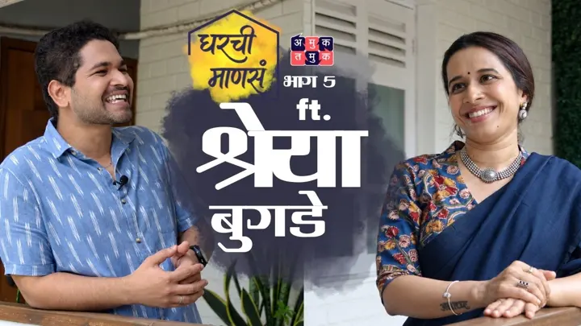
1:27:03Gharchi Mansa with Omkar | EP 5 | ft. Shreya BugdePodcasts · Amuk Tamuk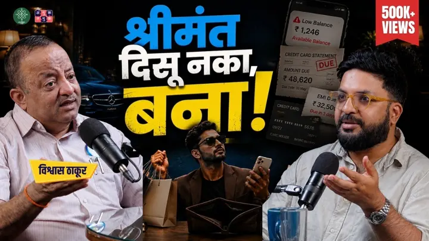
55:53Why Money Is Never Enough? | Vishwas Thakur | Dhan Daulat with Shardul KadamPodcasts · Amuk Tamuk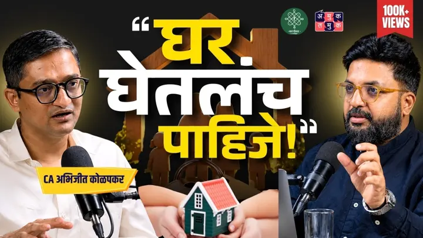
1:23:18Buy or Rent a House? | CA Abhijeet Kolapkar | Dhan Daulat with Shardul KadamPodcasts · Amuk Tamuk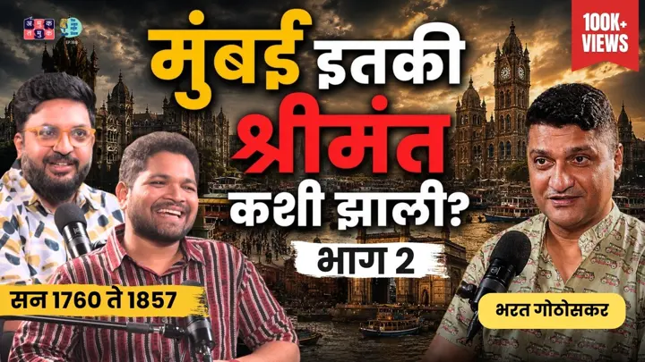
1:06:01Mumbai’s Secret History Revealed | Part 2 | Bharat Gothoskar | TATS with Omkar & ShardulPodcasts · Amuk Tamuk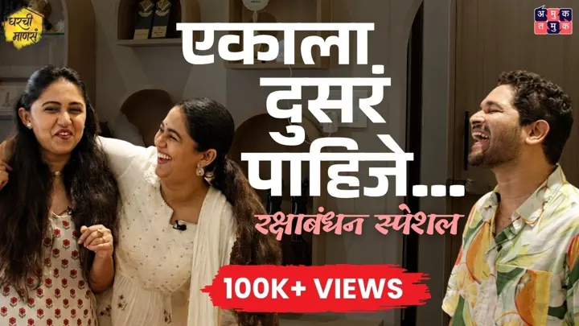
1:08:43Gharchi Mansa with Omkar EP 3 | ft. Mrunmayee Deshpande, Gautami DeshpandePodcasts · Amuk Tamuk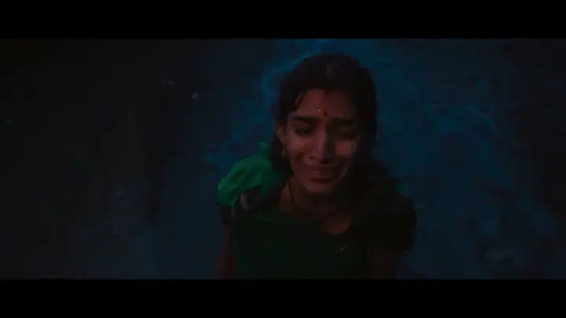
1:13Papi (short film teaser)Short films · Sumedh Kant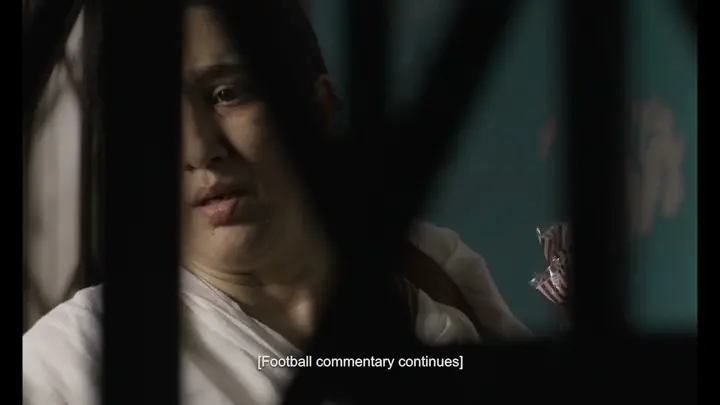
22:26Flight (short film)Short films · Sumedh Kant
Off the clock
When I’m not editing, I’m usually somewhere with a camera. These are mine.
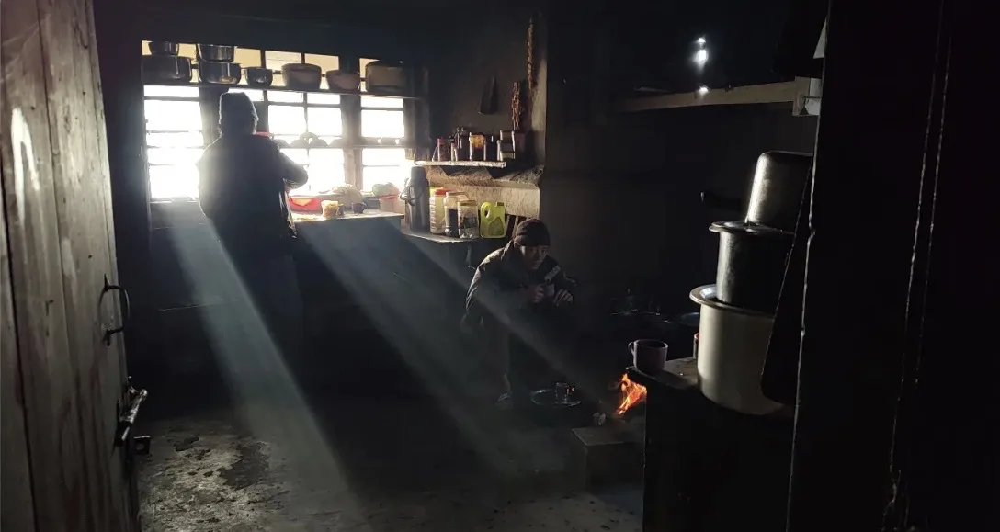
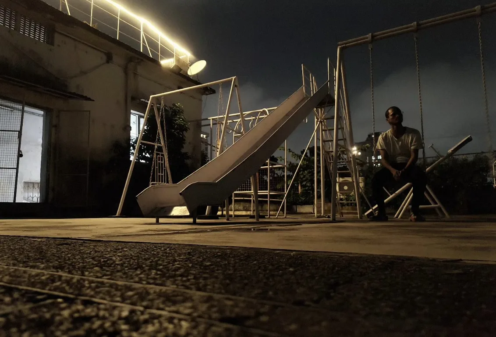
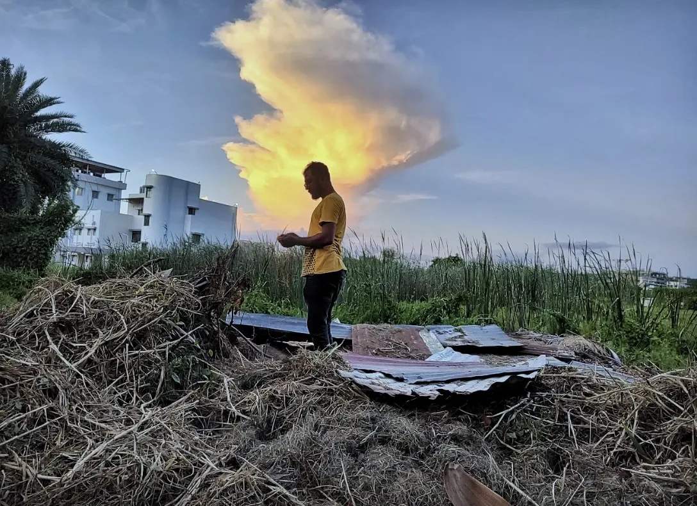
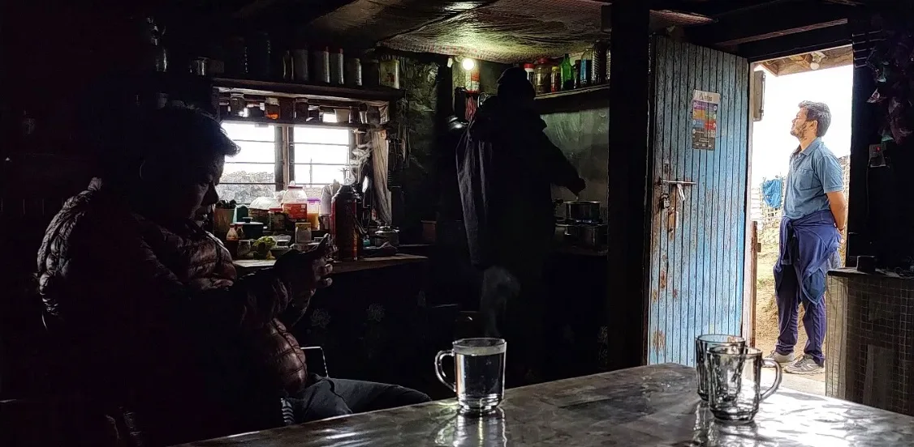
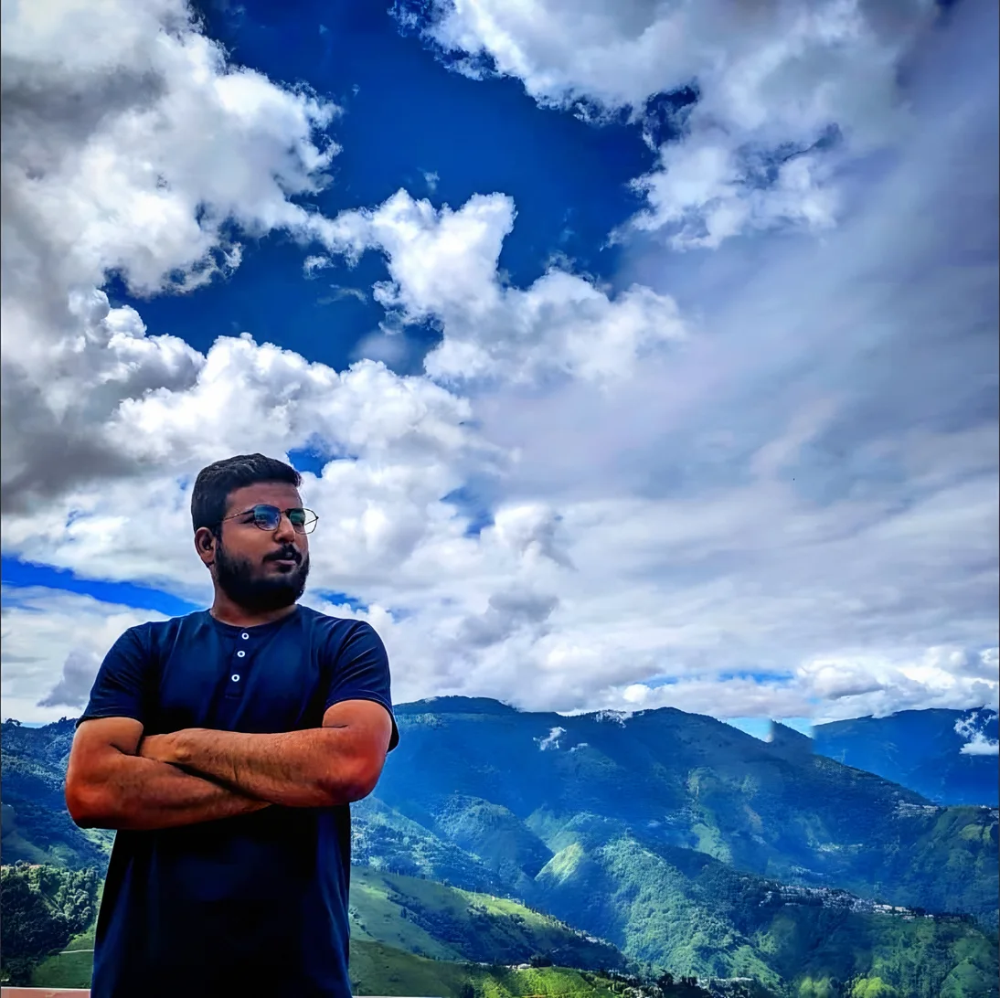
More photographs on Instagram.
@kantastic_visualsSay hello.
Tell me what you’re making. Fill in the slate and it opens an email to me with the details already written.